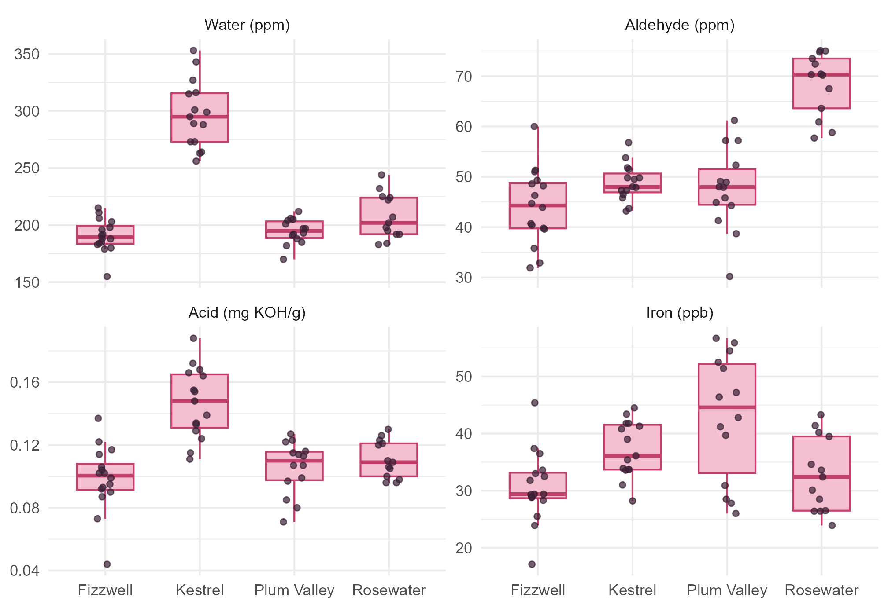

Module 3 · Lesson 6 of 13 Week 52 of 160 About 5–7 hours
One-way MANOVA
Comparing several groups on several variables at once
Extend one-way ANOVA to several responses: build the between-group and within-group matrices of sums of squares and cross-products, compute Wilks’ lambda, Pillai’s trace, the Hotelling-Lawley trace and Roy’s largest root from their eigenvalues, run manova() in R, and check the assumptions with residuals and Box’s M test.
Last lesson compared two suppliers. The plant has four, and the purchasing department wants the full picture: do the four suppliers’ feed lots differ, taking all four inspection results into account? With one response, that would be a one-way ANOVA (Lesson 2.13). With several, it’s a multivariate analysis of variance, or MANOVA. The ideas are the same, with one twist: sums of squares become matrices, and a test now has to summarize a whole matrix in one number. There are four popular ways to do that, and this lesson explains all of them.
ANOVA, but every number becomes a matrix! Don’t panic: the eigenvalues will boil it all down for us, and R does the arithmetic.
In this lesson you’ll:
- see why one MANOVA beats four separate ANOVAs
- build the between-group and within-group matrices of sums of squares and cross-products
- compute Wilks’ lambda, Pillai’s trace, the Hotelling-Lawley trace and Roy’s largest root
- run a MANOVA with
manova(), and choose which statistic to report - check the assumptions, including equal covariance matrices with Box’s M test
- follow up with univariate ANOVAs
Four suppliers, four properties
Here are the 58 lots, one panel per property:
feed |>
tidyr::pivot_longer(all_of(vars), names_to = "property", values_to = "value") |>
mutate(property = factor(property, levels = vars, labels = c("Water (ppm)", "Aldehyde (ppm)", "Acid (mg KOH/g)", "Iron (ppb)"))) |>
ggplot(aes(x = supplier, y = value)) +
geom_boxplot(fill = "#F4C0D1", color = "#C2416C", outlier.shape = NA, width = 0.6) +
geom_jitter(width = 0.12, height = 0, size = 1.3, color = "#3A1F35", alpha = 0.7) +
facet_wrap(~ property, scales = "free_y") +
labs(x = NULL, y = NULL) +
theme_minimal(base_size = 11)
The fingerprints are clear: Kestrel is wet and acidic, Rosewater carries aldehyde, Plum Valley a little iron. You could run four one-way ANOVAs, one per property. But that has the problems you’ve seen before: four tests inflate the chance of a false alarm, and they ignore the correlations, so they can miss differences in combinations of properties, as the NIR analyzer showed in Lesson 5. MANOVA asks one question:
H_0: \boldsymbol\mu_1 = \boldsymbol\mu_2 = \boldsymbol\mu_3 = \boldsymbol\mu_4 ,
where each \boldsymbol\mu_i is a supplier’s mean vector of all four properties.
Sums of squares become matrices
One-way ANOVA splits the total sum of squares into a between-group and a within-group part: \text{SST} = \text{SSB} + \text{SSW}. MANOVA does the same with matrices of sums of squares and cross-products (SSCP matrices). With k groups, group mean vectors \bar{\mathbf{x}}_i and grand mean vector \bar{\mathbf{x}}:
\underbrace{\sum_{i}\sum_{j} (\mathbf{x}_{ij} - \bar{\mathbf{x}})(\mathbf{x}_{ij} - \bar{\mathbf{x}})^\top}_{T,\ \text{total}} = \underbrace{\sum_{i} n_i (\bar{\mathbf{x}}_i - \bar{\mathbf{x}})(\bar{\mathbf{x}}_i - \bar{\mathbf{x}})^\top}_{H,\ \text{between (hypothesis)}} + \underbrace{\sum_{i}\sum_{j} (\mathbf{x}_{ij} - \bar{\mathbf{x}}_i)(\mathbf{x}_{ij} - \bar{\mathbf{x}}_i)^\top}_{E,\ \text{within (error)}} .
Each matrix is p \times p. Its diagonal holds the ordinary ANOVA sums of squares, one per variable, and its off-diagonal entries are the matching sums of cross-products, which carry the correlations. H measures how far apart the group means are, and E how much the lots vary within each supplier. (Dividing E by N - k gives the pooled covariance matrix S_p from Lesson 5.)
Your turn. The setup code has built E and H for you. Compute the total matrix T directly from the data, and check that H + E = T.
The total matrix is centered at the grand mean vector, grand.
T_total <- crossprod(sweep(X, 2, grand))
max(abs(H + E - T_total))About 10^{-11}: zero, up to rounding. And diag(H) holds the four ANOVA “between” sums of squares: 113,070 for the water, 4,954 for the aldehyde, 0.021 for the acid and 1,283 for the iron.
Wilks’ lambda and its friends
In ANOVA, the F statistic compares SSB with SSW. Here, you need to compare the matrix H with the matrix E. The natural comparison is E^{-1}H, the matrix version of the ratio SSB/SSW, and its eigenvalues, \lambda_1 \ge \lambda_2 \ge \dots, sum it up. Each eigenvalue measures how far apart the groups are along one direction, compared with the within-group spread in that direction. There are s = \min(p, k - 1) non-zero eigenvalues: here \min(4, 3) = 3, because four group means always lie in a three-dimensional space.
Four test statistics combine the eigenvalues in different ways:
| Statistic | Formula | Large values mean |
|---|---|---|
| Wilks’ lambda | \Lambda = \dfrac{|E|}{|H + E|} = \prod_i \dfrac{1}{1 + \lambda_i} | small \Lambda is evidence of a difference |
| Pillai’s trace | V = \sum_i \dfrac{\lambda_i}{1 + \lambda_i} | a difference |
| Hotelling-Lawley trace | U = \sum_i \lambda_i | a difference |
| Roy’s largest root | \theta = \lambda_1 | a difference |
Wilks’ lambda has the most intuitive form: the generalized variance within the groups, divided by the generalized variance overall (Lesson 1). If the groups are all the same, the two are about equal and \Lambda is close to 1. If the groups differ a lot, most of the variation is between groups, and \Lambda is close to 0. It’s the likelihood-ratio test for MANOVA. Each statistic has an approximate F distribution, which is how R computes the p-values.
With one variable, all four reduce to the ordinary ANOVA F-test. With two groups, they all reduce to the two-sample T^2.
Your turn. Compute Wilks’ lambda from the determinants.
The denominator is the determinant of the total matrix, H + E.
det(E) / det(H + E)\Lambda = 0.034: within-supplier variation is only about 3% of the total generalized variance. The suppliers’ lots differ enormously.
Your turn. Compute the eigenvalues of E^{-1}H.
The matrix is E^{-1}H: solve(E) %*% H. (Re() drops the zero imaginary parts that eigen() can return for a non-symmetric matrix.)
lambda <- Re(eigen(solve(E) %*% H)$values)
round(lambda, 3)5.499, 2.141, 0.460 and 0. Three non-zero eigenvalues, as promised, and the first two carry 94% of their total: the four suppliers are spread out in mainly two directions. (The directions themselves, the eigenvectors, are the linear discriminants of Lesson 13.) Check that prod(1 / (1 + lambda)) gives Wilks’ lambda.
MANOVA in R
manova() fits the model, with the responses bound into a matrix on the left of the formula, and summary() runs the test. Pillai’s trace is R’s default:
fit <- manova(cbind(water_ppm, aldehyde_ppm, acid_mgKOH, iron_ppb) ~ supplier, data = feed)
summary(fit)
#> Df Pillai approx F num Df den Df Pr(>F)
#> supplier 3 1.8428 21.101 12 159 < 2.2e-16 ***
#> Residuals 54
#> ---
#> Signif. codes: 0 '***' 0.001 '**' 0.01 '*' 0.05 '.' 0.1 ' ' 1
summary(fit, test = "Wilks")
#> Df Wilks approx F num Df den Df Pr(>F)
#> supplier 3 0.033553 29.385 12 135.22 < 2.2e-16 ***
#> Residuals 54
#> ---
#> Signif. codes: 0 '***' 0.001 '**' 0.01 '*' 0.05 '.' 0.1 ' ' 1Pillai’s trace is 1.84, with F = 21.1 on 12 and 159 degrees of freedom: p = 4 \times 10^{-27}. Wilks, Hotelling-Lawley and Roy all agree, with even smaller p-values. No surprise there: the boxplots showed differences you could see from across the room. The real work starts after the test: which suppliers differ, and on what? That’s the next lesson.
Your turn. Run the MANOVA and pull out the p-value for Wilks’ lambda.
The test’s name is "Wilks".
fit <- manova(cbind(water_ppm, aldehyde_ppm, acid_mgKOH, iron_ppb) ~ supplier, data = feed)
summary(fit, test = "Wilks")$stats[1, "Pr(>F)"]6 \times 10^{-32}. Wilks’ \Lambda = 0.034 converts to F = 29.4 on 12 and 135.2 degrees of freedom (Rao’s approximation, which is why the degrees of freedom aren’t whole numbers).
Which statistic should you report?
They usually agree, as they do here. When they don’t, it’s because they weigh the eigenvalues differently:
- Roy’s largest root looks only at \lambda_1, so it’s the most powerful when the groups differ along a single direction, and the least when they differ along several. Its F approximation is an upper bound, so its p-values are too small: treat it with care.
- Wilks’ lambda and Hotelling-Lawley sit in the middle. Wilks is the traditional choice and the likelihood-ratio test.
- Pillai’s trace is the most robust when the assumptions are shaky, especially unequal covariance matrices, as long as the groups are of similar sizes. That’s why R uses it by default, and it’s a safe choice to report.
Whichever you choose, choose it before you look at the results, and report it with its F, degrees of freedom and p-value.
Checking the assumptions
MANOVA assumes the same things as a two-sample T^2, for every group:
- Independent observations. Each lot is its own delivery, so that’s reasonable.
- Multivariate normality within each group. Check the residuals, each observation minus its group’s mean vector: one-variable Q-Q plots and Shapiro-Wilk tests, and a chi-square Q-Q plot of their Mahalanobis distances (Lesson 3). Here, all four residuals pass Shapiro-Wilk comfortably (every p-value is above 0.5). MANOVA, like ANOVA, is fairly robust to moderate non-normality.
- Equal covariance matrices. That’s the multivariate version of ANOVA’s equal variances, and it’s checked with Box’s M test: H_0: \Sigma_1 = \Sigma_2 = \dots = \Sigma_k.
Box’s M has two well-known faults: it’s very sensitive to non-normality (it can reject because of heavy tails, not because of the covariances), and with big samples it flags differences too small to matter. So the usual advice is to take it seriously only at small significance levels, like 0.001. If it does reject, prefer Pillai’s trace, and look at the group standard deviations and correlations to see what differs.
Your turn. Run Box’s M test for the four suppliers.
The grouping variable is supplier.
bm <- heplots::boxM(X, supplier)
bm$p.valuep = 0.0008: the covariance matrices differ, even by Box’s strict standard. sapply(levels(supplier), function(s) apply(X[supplier == s, ], 2, sd)) shows the culprit: Kestrel’s water has a standard deviation of 29 ppm, against 11 to 20 for the others. Since the groups are of similar sizes (13 to 16 lots) and the differences between suppliers are huge, Pillai’s trace is still trustworthy here.
Following up with ANOVAs
A significant MANOVA says that the mean vectors differ somewhere. The simplest follow-up is an ordinary ANOVA for each response, which summary.aov() runs straight from the MANOVA fit:
summary.aov(fit)
#> Response water_ppm :
#> Df Sum Sq Mean Sq F value Pr(>F)
#> supplier 3 113070 37690 94.813 < 2.2e-16 ***
#> Residuals 54 21466 398
#> ---
#> Signif. codes: 0 '***' 0.001 '**' 0.01 '*' 0.05 '.' 0.1 ' ' 1
#>
#> Response aldehyde_ppm :
#> Df Sum Sq Mean Sq F value Pr(>F)
#> supplier 3 4953.8 1651.26 38.408 1.997e-13 ***
#> Residuals 54 2321.6 42.99
#> ---
#> Signif. codes: 0 '***' 0.001 '**' 0.01 '*' 0.05 '.' 0.1 ' ' 1
#>
#> Response acid_mgKOH :
#> Df Sum Sq Mean Sq F value Pr(>F)
#> supplier 3 0.020871 0.0069570 19.551 1.04e-08 ***
#> Residuals 54 0.019215 0.0003558
#> ---
#> Signif. codes: 0 '***' 0.001 '**' 0.01 '*' 0.05 '.' 0.1 ' ' 1
#>
#> Response iron_ppb :
#> Df Sum Sq Mean Sq F value Pr(>F)
#> supplier 3 1283.4 427.80 7.6749 0.0002316 ***
#> Residuals 54 3009.9 55.74
#> ---
#> Signif. codes: 0 '***' 0.001 '**' 0.01 '*' 0.05 '.' 0.1 ' ' 1All four properties differ between suppliers: water with F = 94.8, aldehyde 38.4, acid 19.6, and iron 7.7 (p = 0.0002). Running ANOVAs only after a significant MANOVA is called a protected approach: the MANOVA guards against the false alarms of fishing through many responses, at least partly. It still doesn’t say which suppliers differ on what, or account for the correlations between the responses. For that, the next lesson builds contrasts and simultaneous intervals.
Your turn. Find the p-value of the iron’s ANOVA.
The p-value column is called "Pr(>F)".
fit <- manova(cbind(water_ppm, aldehyde_ppm, acid_mgKOH, iron_ppb) ~ supplier, data = feed)
anovas <- summary.aov(fit)
anovas[[4]][1, "Pr(>F)"]p = 0.00023. The iron, the property that told Fizzwell and Plum Valley apart, is the weakest of the four overall: its differences are modest, and mostly involve Plum Valley, while the water and the aldehyde each set one supplier far apart from the rest.
Challenge round
Challenge 1 · Pillai’s trace by hand. Compute Pillai’s trace from the eigenvalues of E^{-1}H, and compare it with summary(fit).
Pillai’s trace is \sum \lambda_i/(1 + \lambda_i).
lambda <- Re(eigen(solve(E) %*% H)$values)
sum(lambda / (1 + lambda))1.843, as summary(fit) reports. Pillai’s trace can’t exceed s = 3, one for each non-zero eigenvalue, and each term is a squared canonical correlation between the properties and the supplier, an idea you’ll meet in Lesson 12.
Challenge 2 · Without Kestrel. Leave Kestrel out, and redo Box’s M test and the MANOVA for the other three suppliers.
Leave out "Kestrel".
three <- filter(feed, supplier != "Kestrel")
fit3 <- manova(cbind(water_ppm, aldehyde_ppm, acid_mgKOH, iron_ppb) ~ supplier, data = three)
c(box_m = heplots::boxM(as.matrix(three[, vars]), three$supplier)$p.value,
pillai = summary(fit3)$stats[1, "Pr(>F)"])Box’s M now gives p = 0.23: the other three suppliers share a covariance matrix, so Kestrel was the odd one out. And the three still differ clearly (p = 10^{-10}), mostly through Rosewater’s aldehyde and Plum Valley’s iron.
Quick quiz
1. What does MANOVA’s null hypothesis say?
H_0: \boldsymbol\mu_1 = \dots = \boldsymbol\mu_k, one hypothesis about all the properties together. Equal covariance matrices are an assumption, checked with Box’s M.
2. What’s on the diagonal of the between-group SSCP matrix H?
The diagonals of H and E are the ANOVA sums of squares. The off-diagonal cross-products carry the correlations.
3. Wilks’ lambda is 0.034. What does it mean?
\Lambda = |E|/|H + E|. Values near 1 mean no difference, and values near 0 a big one.
4. With 4 groups and 4 variables, how many non-zero eigenvalues does E^{-1}H have?
s = \min(p, k - 1) = \min(4, 3) = 3: four group means span at most a three-dimensional space.
5. Box’s M test rejects equal covariance matrices. What’s a sensible reaction?
Box’s M is oversensitive, and Pillai’s trace holds up well when the groups are of similar sizes. Here, the culprit was Kestrel’s variable water content.
6. Why run the univariate ANOVAs only after a significant MANOVA?
That’s the “protected” approach. Contrasts and simultaneous intervals, in the next lesson, give fuller protection.
Wrap-up
You can now compare several groups on several variables at once! Here’s what you’ve learned:
- MANOVA tests H_0: \boldsymbol\mu_1 = \dots = \boldsymbol\mu_k in one go, without the multiple testing of separate ANOVAs, and with the correlations taken into account.
- SSCP matrices: T = H + E, between and within groups. Their diagonals are the ANOVA sums of squares.
- The test statistics all come from the eigenvalues of E^{-1}H: Wilks’ \Lambda = |E|/|H + E|, Pillai’s \sum\lambda_i/(1 + \lambda_i), Hotelling-Lawley’s \sum\lambda_i and Roy’s \lambda_1. There are \min(p, k - 1) non-zero eigenvalues.
- In R:
manova(cbind(y1, y2, ...) ~ group)andsummary(fit, test = "Pillai"). Pillai is the robust default, and Roy is liberal. - Assumptions: independence, multivariate normal residuals, and equal covariance matrices (Box’s M,
heplots::boxM(), at a strict level). Kestrel’s covariance matrix differs, the other three suppliers’ don’t. - Follow-ups:
summary.aov(fit)runs one ANOVA per response. All four properties differ between the suppliers.
TipPractice in RStudio (optional, about an hour)
Download feed_lots.csv into your project’s data-raw/ folder, and install the heplots and car packages.
- HE plots. Fit
mlm <- lm(cbind(water_ppm, aldehyde_ppm, acid_mgKOH, iron_ppb) ~ supplier, data = feed)and runheplots::heplot(mlm). It draws the H and E matrices as ellipses: if the H ellipse pokes outside the E ellipse, the effect is significant. Tryheplots::pairs(mlm)for every pair of properties. - car’s Manova. Run
car::Manova(mlm)andsummary(car::Manova(mlm)). It prints all four statistics, and the H and E matrices. - A smaller difference. Run the MANOVA for Fizzwell and Plum Valley only, and compare it with your two-sample T^2 from Lesson 5. All four statistics should give the same F.
- Residual checks. Compute the residuals,
resid(mlm), and draw a chi-square Q-Q plot of their squared Mahalanobis distances (use the pooled covariance,crossprod(resid(mlm)) / (58 - 4)). Are any lots unusual?
NoteKey words from this lesson
- MANOVA (multivariate analysis of variance)
- A test of whether several groups have the same mean vector on several response variables.
- SSCP matrix
- A matrix of sums of squares and cross-products. In MANOVA, the total matrix T splits into a between-groups matrix H and a within-groups matrix E.
- Wilks’ lambda
- |E|/|H + E|, the ratio of the within-group to the total generalized variance. It’s the likelihood-ratio statistic for MANOVA.
- Pillai’s trace
- \sum \lambda_i/(1 + \lambda_i), the most robust of the four MANOVA statistics.
- Hotelling-Lawley trace
- \sum \lambda_i, the sum of the eigenvalues of E^{-1}H.
- Roy’s largest root
- \lambda_1, the largest eigenvalue of E^{-1}H, most powerful when the groups differ in a single direction.
- Box’s M test
- A test that several groups share the same covariance matrix. It’s sensitive to non-normality, so it’s usually read at a strict level.
- Protected univariate tests
- Ordinary ANOVAs for each response, run only after a significant MANOVA.
NoteWant to read more?
- Penn State STAT 505, Lesson 8: Multivariate Analysis of Variance (MANOVA), sections 8.1 to 8.5. The SSCP matrices, the four test statistics, and a complete worked example with checks.
- John Fox, Michael Friendly and Georges Monette, “Visualizing hypothesis tests in multivariate linear models: the heplots package for R”, Computational Statistics (2009). Where HE plots come from, and how to read them.
- Johnson and Wichern, Applied Multivariate Statistical Analysis, chapter 6, sections 6.4 to 6.6. One-way MANOVA, its test statistics and its assumptions.